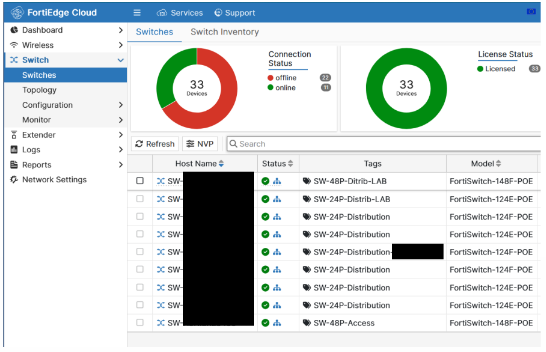
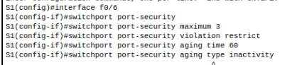
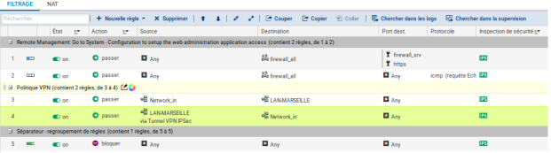
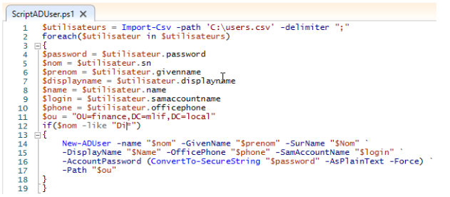

Focus Thématique
Responsabilité SISR
"L'infrastructure réseau est le premier rempart technique pour garantir la conformité éthique et juridique face à l'IA."
Mes Activités de Stage (IFAC 2026)
Supervision Cloud Centralisée & Data Privacy
Déploiement centralisé via FortiGate Cloud et Security Fabric pour une visibilité totale.
Lien Veille
📄 Sécurité et Libertés Publiques →La centralisation cloud exige des garanties de souveraineté des données réseau face aux plateformes tierces.

Segmentation Réseau & Gouvernance
Configuration de VLANs 3 (Pro) et 4 (Public) pour isoler les flux sur switchs Cisco et Fortinet.
Lien Veille
📄 Régulation et Conformité des Entreprises →Isolement des outils IA grand public (VLAN 4) pour protéger les données critiques de l'association (VLAN 3).
L'Humain face au défaut de l'Automatisation
Problème terrain
Échec DHCP sur le VLAN 4 : basculement manuel en IP Fixe pour garantir la continuité de service.
Lien Veille
📄 Contrôler l'incontrôlable (Éthique) →L'obligation de garder une supervision humaine capable de reprendre la main quand l'automatisation réseau échoue.
Mes TPs de Cours (SISR)
Sécurisation Switch Cisco (L2)

Mise en place de DHCP Snooping et Port Security contre les attaques.
Lien Veille
📄 L'IA en cybersécurité →Contrer les attaques automatisées (brute-force L2) générées par des IA malveillantes via des sécurités robustes.
VPN SNS (IPsec Site-à-Site)

Chiffrement des flux inter-sites via des tunnels IPsec (IKEv2).
Lien Veille
📄 Justice et Métiers du Droit →Le chiffrement garantit la confidentialité des données face aux interceptions de masse automatisées.
Déploiement AD / GPO (Scripting)
Création automatisée d'utilisateurs via PowerShell et déploiement de GPO.
Lien Veille
📄 Identité Éthique & Traçabilité →L'automatisation via script montre comment on gérera demain les identités des agents IA dans un Active Directory.
